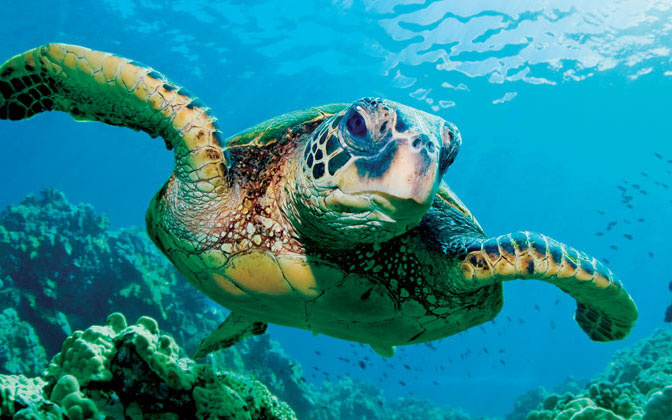

The idea of colours floating across a sheet of paper forming either familiar shapes or new creations is appealing to the eye. In reality,
though it is much more than just the beads of colour.
Photography can capture someone’s heart and soul. Even the simplest photo has a story that tails along with it. It is an escape from the real world; a creation that narrows on one particular
subject and carefully details their every move and emotion.
Photography can capture someone’s heart and soul. Even the simplest photo has a story that tails along with it. It is an escape from the real world; a creation that narrows on one particular
subject and carefully details their every move and emotion.
IMAGE GALLERY
